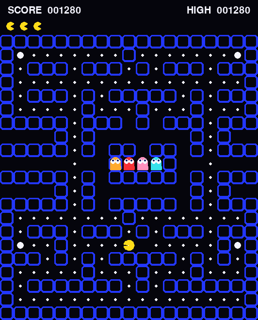
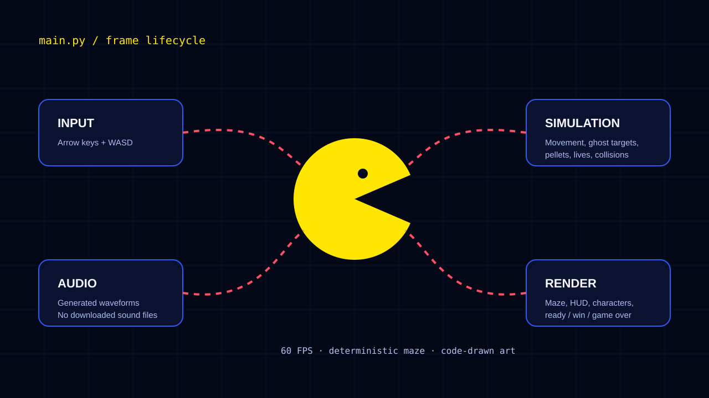

Move, collect, react
The player moves tile by tile, clears pellets, watches ghost positions, and decides when to use a power pellet.
PROJECT 07 ARCADE GAME LOCAL BUILD
A small but complete arcade game built in Python, including the maze, player movement, four ghost behaviors, scoring, game states, and retro sound effects.

This started as a challenge to see how much of a classic arcade loop I could create without downloading a pack of assets. Drawing everything in code forced me to understand the maze, movement, timing, and feedback instead of hiding those parts behind premade files.
The player moves tile by tile, clears pellets, watches ghost positions, and decides when to use a power pellet.
Each colored ghost uses a different target idea, creating variety without requiring a large AI system.
The HUD and generated effects make pellets, danger, victory, and game over readable right away.
The game reads input, advances the simulation, draws the current state, and plays feedback. Keeping those jobs separate made bugs easier to understand.
The maze, HUD, player, ghosts, pellets, and power pellets are all drawn by Pygame.

Input, simulation, audio, and rendering meet in the main game loop.
Characters can change direction when the next tile is open, while tile-centering logic keeps movement from slowly drifting out of the maze.
The ghosts share collision and frightened behavior but choose targets differently, giving the player more than one pattern to read.
Pellet, power-up, ghost, life, victory, and intro sounds are generated as waveforms in Python, so the repository stays self-contained.
A launcher creates the virtual environment, installs the pinned Pygame dependency, and starts the game on macOS, Windows, or Linux.
A game makes state mistakes obvious. One movement bug, delayed collision, or incorrect reset can change the whole experience, so I learned to test the loop in smaller pieces.
This is an educational Pac-Man-inspired build. Pac-Man and the original characters are trademarks of Bandai Namco Entertainment; commercial use would require original branding and assets.
See more projects →